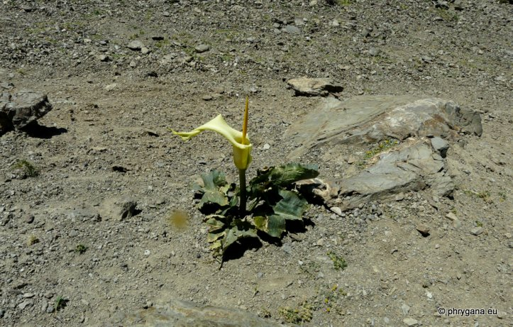
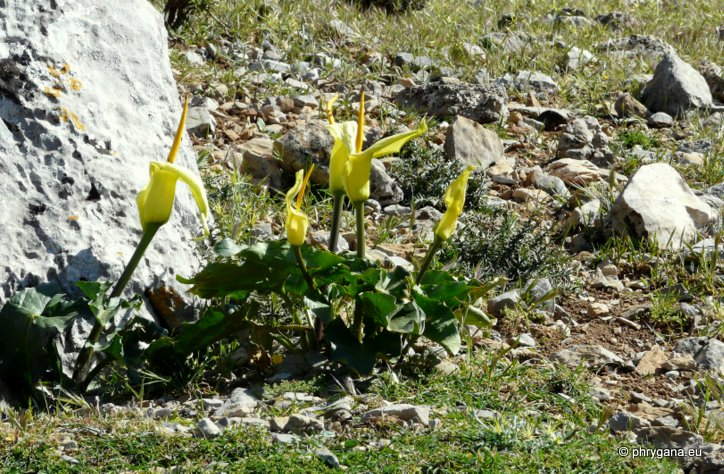
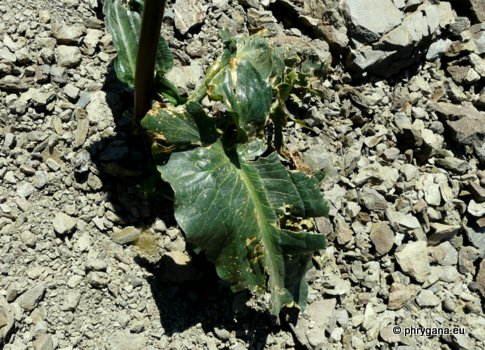
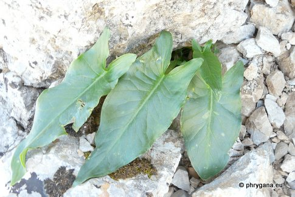
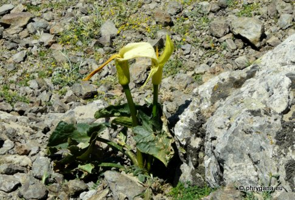
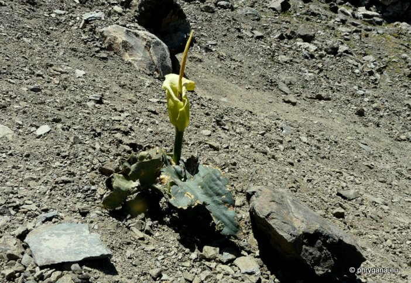
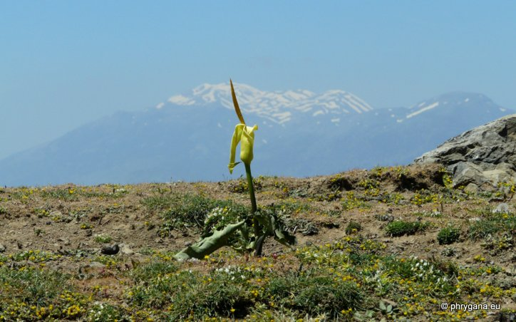

Arum creticum Kofinas (Kapetaniana) 06 mai 2012
Arum creticum Kofinas (Kapetaniana) 06 mai 2012

Arum creticum Kofinas (Kapetaniana) 06 mai 2012
Arum creticum Kofinas (Kapetaniana) 06 mai 2012
Arum creticum Kofinas (Kapetaniana) 06 mai 2012
| PHRYGANA | Fauna | Flora | Galles | liste des espèces |
contact -
info - commentaires phrygana1 (at) gmail.com |
| Particularités crétoises | nouveautés | Mines | ressources naturelles |
| Arum creticum BOISS. & HELDR. |
| 365 | Flora | ARACEAE | Arum L. |
|  Arum creticum Kofinas (Kapetaniana) 06 mai 2012 |
| Cretan Arum | |
| Plante robuste | |
| Feuilles: vert foncé, brillantes, apparaissant en automne, sagitées, longuement pétiolées | |
| Racines: bulbes globuleux | |
| Fleurs: spathe jaune pâle à jaune franc, 8 - 13 cm, avec un tube renflé et les marges s'étalant vers l'extérieur, dégageant le spadice; spadice jaune à jaune orangé, cylindrique, long (quelque peu plus court que le spathe), avec une odeur douce | |
| Fruit: une tête verte à 2 - 8 graines | |
| Hauteur: 30 - 40 cm | Type biologique: géophyte bulbeux |
| Floraison: avril mai juin | |
| Altitudes: 0 - 850 m | |
| Statut en Crète: indigène -- native | |
| Biotopes en Crète: phrygana, garrigue, pelouses sèches, lieux rocailleux, jusque dans les montagnes, forêts claires | |
| Distribution: Crète, Rhodes, Asie mineure | |
| Espèce héliophile, parfois cultivée dans les jardins | |
|
 Arum creticum Kofinas (Kapetaniana) 06 mai 2012 |
|

 Arum creticum Kofinas (Kapetaniana) 06 mai 2012 |
|

Arum creticum Kofinas (Kapetaniana) 06 mai 2012 |
|
 Arum creticum Kofinas (Kapetaniana) 06 mai 2012 |
|
 Arum creticum Kofinas (Kapetaniana) 06 mai 2012 |
| 06 juin 2012 |
| © paul fontaine -- © Phrygana.eu 2007 -- 2013 |